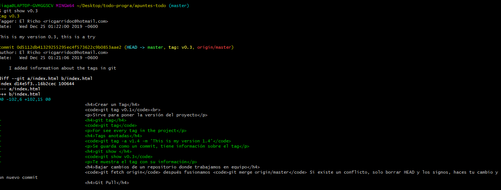

git config --global user.name fulanito
git config --global user.name
git config --global user.name mengano
git config --global user.email mail@mail.com
git config --global user.email
git config --global user.email mail@mail.com
git config --global --list
ssh-keygenls -rfcd .sshcar id_rsa.pub lo copias y lo pegas en tu cuenta de github en ssh keysEs un archivo que sirve para que no se suba la carpeta de node_modules
.git-keep
git loggit reset --hard HEAD~1
Solución si NO hemos subido el commit a nuestro repositorio remoto (no hemos realizado push) y perdemos los cambios
no perdemos los cambios de los commits posteriores. Todos los cambios aparecerán como pendientes para realizar un commit.
git reset --soft HEAD~1
git commit --amend -m "cambio en el commit" quizás github no deje subir la modificación, entonces usar git push origin master -f para forzar el push
git commit -am "comentario"
git revert HEAD
De esta forma cualquier usuario que se tenga actualizado el contenido del repositorio remoto puede obtener el cambio simplemente haciendo pull.
qgit brach test-narvbar
También puedes crear ramas de ramas que no sean la master, solo debes posicionarte en la rama a la cual le quieres crear una rama
git branch -aAl clonar un repositorio puedes moverte entre sus ramas, no las ves porq están ocultas pero si existen
git checkout xxxxxxxxxxxxxxxxxxxxxxxxx(commit number)git checkout branchNameAl clonar un repositorio puedes moverte entre sus ramas, no las ves porq están ocultas pero si existen
git checkout mastergit log --oneline
git diff
git reset --soft xxxxxxxxxxx(aquí va el commit que quieres borrar)git reset --hard xxxxxxxxxxx(aquí va el commit que quieres borrar)git branch
Puedes crear una rama ddde otraaaaa ramaa
git branch NombreRama
También puedes crear ramas de ramas que no sean la master, solo debes posicionarte en la rama a la cual le quieres crear una rama
posicionarte en Master y luego "git merge rama"git branch -D
git remote add origin xxxxxx(poner url del repositorio)git remote -vgit remote remove origingit push origin mastergit tag v0.1Sirve para poner la versión del proyecto
git tag
For see every tag in the project
git tag -a v1.4 -m 'This is my version 1.4'
Se guarda como un commit, tiene información sobre el tag PERO se guarda el tag antes que un commit
git describe --tags $(git rev-list --tags --max-count=3)
git tag v0.9 -m "mensaje" xxxxxxxxxxxxxx
git show v0.3
Te muestra el tag con su información
git tag -a v1.2 9fceb02
git push origin --tags
git push origin v1.5
IMPORTANTE:No se pueden modificar etiquetas a menos que crees una rama y luego hagas un merge git checkout -b version2 v2.0.0
git push origin NombreDeLaRama
git fetch origin después fusionamos git merge origin/master Si existe un conflicto, solo borrar HEAD y los signos, haces tu cambio y un nuevo commit
git pull origin master
git push origin "nombreDeLaRama"
git clone "url del repositorio de git"
Al clonar un repositorio puedes moverte entre sus ramas, no las ves porq están ocultas pero si existen
git log > commit.txt
Ve a la pestaña de Settings y en la parte de abajo da click en Transfer
Cuando haces un fork en tu cuenta de git y modificas ese fork, pero quieres contribuir al proyecto original donde hiciste el fork, debes presionar New Pull Request
ssh "el IP o la dirección que te pongan root@pagin.com"
git checkout -- .
Sirve principalmente para cuando quieres agregar un grupo de archivos por tienen registro de git, entonces borras el archivo oculto de git y usas el comando para poder agregar los archivos a tu repositorio
git rm --cached practicas/php/fm-exercises/actualizacion/ajax